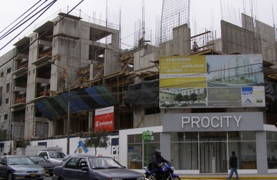
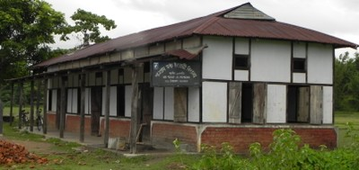

Wall [LWAL]
A wall is a vertical planar building element which usually resists gravity loads, but also resists horizontal forces and provides stability to a building during an earthquake. Usually its length is greater than 6 times its thickness. Any vertical elements, like studs in light wood framed walls, are to be included in assessing the wall thickness.
Wall describes the lateral load-resisting structure comprising of walls and frames where the walls, due to their substantial lengths, resist the vast majority of the lateral load. Walls may be monolithic as in the case of reinforced concrete walls, or be of masonry construction. They can also comprise several materials as in the case of confined masonry construction with its system of masonry walls and reinforced concrete confining columns and beams, light wood framing with its sheet lining combining with the wood to provide earthquake bracing, or walls where mud has been applied to a light wood framework as in quincha construction.
Also within the definition of walls, coupled-walls or coupled-shear walls are to be included. These structures consist of two or more walls in the same plane (forming walls with openings up their heights) that are connected usually at every story by beams whose span-to-depth ratios are much smaller than for conventional beams.

A simplified drawing of a building with shear walls (A. Charleson, Seismic Design for Architects, Architectural Press 2008, p64 fig. 5.2).

Walls, quincha construction, Peru (S. Brzev)


Wall, precast concrete, New Zealand (left - A. Charleson) and Nepal (right - K. Porter)

Reinforced concrete wall building under construction, Lima, Peru (S. Brzev)
Pre-1976 in-situ reinforced concrete wall construction, Christchurch, New Zealand (J. Bothara)

Wall, unreinforced masonry, New Zealand (A. Charleson)


Wood stud walls (left) and cold-formed steel stud wall (right) act as the Wall system for the purpose of Lateral Load-Resisting System classification; left photo shows a wood stud wall from New Zealand (A. Charleson), and the right photo shows a cold-formed steel stud wall from Canada (S. Brzev)

Confined masonry acts like a Wall system (EERI)

Assam type construction consists of small-sized wood columns and beams which are braced with ikra walls; this acts like a Wall system since connections between the wooden members are unable to transfer bending moments; this traditional construction in Assam, India has shown good performance in past earthquakes (People in Centre)

Dhaji Dhewari buildings in Kashmir, India consist of wood-reinforced brick masonry walls (D. Rai)


Cast-in place concrete wall construction, Kyrgyzstan (K. Kanbolotov)